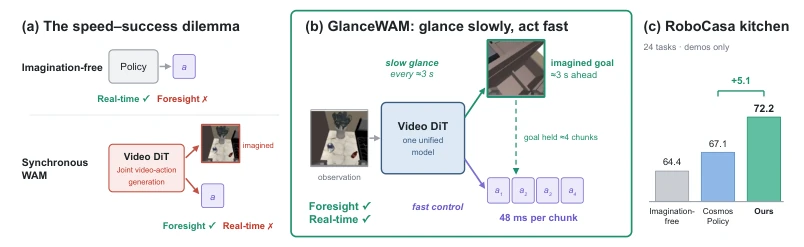
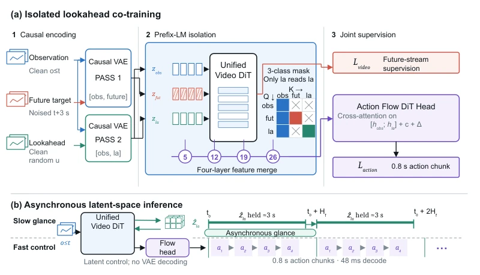
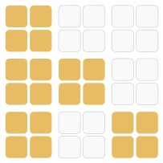
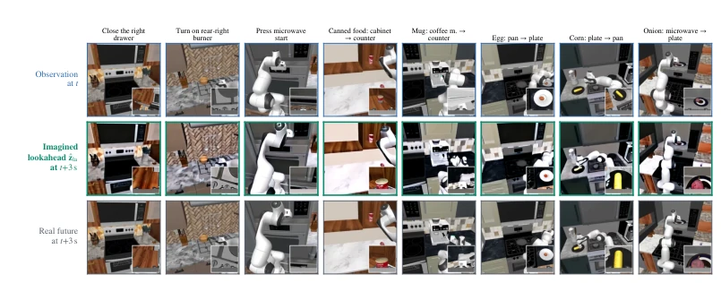
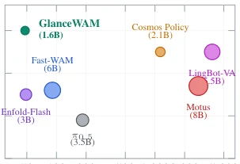
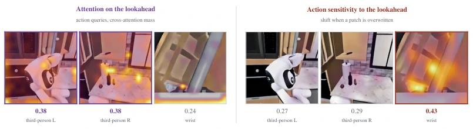
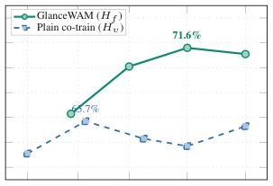
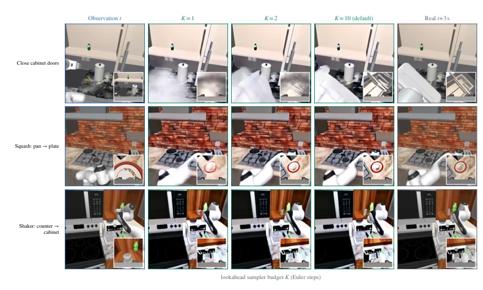

This paper has "loosened" the constraints on world models. Previous WAMs were like obsessive-compulsive directors, insisting on rendering a segment of future video every 48 milliseconds, resulting in inference as slow as a snail, and degradation due to predictions being too short. GlanceWAM, however, is like an experienced chess player, glancing at the future every 3 seconds, then closing eyes and playing chess based on memory. It proves that robots do not need second-by-second "high-definition previews", only a "distant landmark". Although making video generation asynchronous sounds simple, handling "stale information" and "attention pollution" is the real skill. However, the robustness of this sparse imagination in high-speed dynamic scenarios still needs verification, after all, a 3-second interval might be a bit risky in high-speed operations, and it relies on the quality of pre-trained video models.
研究动机Motivation
现有 World-Action Models (WAMs) 陷入速度 - 成功困境。同步生成视频（如 Cosmos Policy (Kim et al., 2026)）导致推理延迟过高（1.1-3.8s），无法满足实时控制。完全放弃测试时想象（如 Fast-WAM (Yuan et al., 2026b)）虽快但丢失视觉 foresight，导致长程任务成功率下降。本文旨在打破这一僵局，证明稀疏、异步的视觉想象既能保留 foresight 优势，又能满足实时性。此外，现有方法如 LingBot-VA (Li et al., 2026c) 仍耦合视频与动作，限制了效率。
Existing World-Action Models (WAMs) are trapped in a speed-success dilemma. Synchronous video generation (such as Cosmos Policy (Kim et al., 2026)) leads to excessively high inference latency (1.1-3.8s), failing to meet real-time control requirements. Completely abandoning test-time imagination (such as Fast-WAM (Yuan et al., 2026b)) is fast but loses visual foresight, leading to decreased success rates in long-horizon tasks. This paper aims to break this deadlock, proving that sparse, asynchronous visual imagination can retain foresight advantages while meeting real-time requirements. Furthermore, existing methods like LingBot-VA (Li et al., 2026c) still couple video and actions, limiting efficiency.

Figure 1: Synchronous imagination versus sparse lookahead foresight. (a) Prior WAMs couple future generation to the action chunk at control rate, incurring heavy multi-step sampling latency over near-static horizons. (b) GlanceWAM decouples timescales: it glances ahead asynchronously to imagine a single latent lookahead frame seconds into the future (Hf ≈3 s) on a slow clock, pipelining imagination off the critical path while decoding action chunks in latent space at 48 ms. (c) On RoboCasa kitchen (demos only), GlanceWAM reaches 72.2%, surpassing synchronous Cos- mos Policy (67.1%) and imagination-free co-training (64.4%).
方法Method
GlanceWAM 采用统一 Video DiT 架构，解耦了视觉想象与控制执行。训练时，输入包含观测历史、未来目标（noised）和随机偏移的干净 lookahead（clean lookahead）。通过两遍 VAE 编码和 3 类 prefix-LM 注意力掩码，隔离 lookahead 信息，防止污染观测编码。Action Head 通过交叉注意力读取多层的 [hobs; hla] 表示，并接收时间偏移量 ∆ 以应对信息过时。推理时，每 Hf≈3s 异步生成一次 latent lookahead，在控制循环中复用，动作解码直接在 latent space 进行（48ms/chunk），无需 VAE 解码回像素。这种设计将生成开销移出关键路径，同时通过随机化训练 offset 增强鲁棒性。
GlanceWAM adopts a unified Video DiT architecture, decoupling visual imagination and control execution. During training, inputs include observation history, future goals (noised), and randomly offset clean lookahead (clean lookahead). Through two-pass VAE encoding and 3-class prefix-LM attention masks, lookahead information is isolated to prevent contaminating observation encoding. The Action Head reads multi-layer [hobs; hla] representations via cross-attention and receives time offset ∆ to cope with information staleness. During inference, latent lookahead is generated asynchronously every Hf≈3s, reused in the control loop, action decoding is performed directly in latent space (48ms/chunk), without VAE decoding back to pixels. This design moves generation overhead off the critical path, while enhancing robustness through randomized training offsets.

Figure 2: GlanceWAM architecture. (a) Training: A unified window supplies observations o≤t, noised future xt+Hf , and clean lookahead xt+u (u ∼U(0, Hf]). A two-pass VAE and 3-class prefix-LM mask isolate the lookahead; multi-layer tokens [hobs; hla] condition the action head. (b) Inference: The video head glances ahead once per Hf to generate latent ˆzla, which is held in latent space and reused across 0.8 s chunks (48 ms each) with decaying offset ∆.

Figure 3: Diffusion forcing mask. 3-class prefix-LM mask M.
On the RoboCasa kitchen benchmark (24 tasks), GlanceWAM achieves a 72.2% success rate, outperforming Cosmos Policy (67.1%) and the imagination-free baseline (64.4%). The LIBERO benchmark reaches 99.0%. In terms of inference speed, single-chunk action decoding requires only 48ms (A100), 24 times faster than the synchronous baseline. Ablation studies show that lookahead conditioning is causally loaded (success rate drops to 61.6% after zeroing), and 1-step sampling is sufficient to maintain performance, proving the policy relies on spatial layout rather than pixel fidelity.

Figure 4: Qualitative visualizations of self-generated lookahead frames. Across eight represen- tative RoboCasa kitchen tasks (articulation, knobs, buttons, pick-and-place), we show the initial ob- servation at t, the lookahead frame generated by GlanceWAM, and the environment frame reached at t + 3 s. The model synthesizes structurally accurate task destinations (e.g., closed doors, dis- placed objects on target surfaces) while coarsening fine textures, matching the spatial property the downstream policy relies on (§4.5). Lookaheads are decoded to RGB here strictly for visualization; during control execution, representations remain entirely in latent space (§3.4). One third-person view per panel with wrist view inset.

Figure 7: Latency–success trade-off on LIBERO. Per-chunk action latency (B=1) vs. 4-suite average success rate on an NVIDIA A100 40GB GPU; marker area denotes total model size (Appendix B).
其他图片Other Figures

Figure 5: The action head reads the lookahead. Both maps are computed from the generated lookahead frame, averaged over 12 demonstration contexts and normalized within each half (panel numbers denote local weight shares). Left: cross-attention density from action queries over looka- head tokens, concentrating on functional scene elements and providing approximately 40% of total cross-attention value weight. Right: displacement in predicted action chunk trajectory when lo- calized 2×2-token patches of the lookahead are replaced with observation tokens at corresponding locations. Both measurements confirm active lookahead consumption during control (Appendix C).

Figure 6: Prediction horizon sweeps. Success rate vs. horizon H: GlanceWAM lookahead (Hf, solid green) vs. plain co-training video tar- get (Hv, dashed blue).

Figure 8: Generated lookaheads vs. sampler budget K (RoboCasa kitchen demonstration con- texts, matched seeds per row; the last column is the demonstration frame at t+Hf, the target the video objective was trained against). Fidelity improves visibly from K=1 to K=10 — the one-step lookahead smears the arm and the manipulated object, most clearly in the wrist insets — yet success is flat across the whole 1–30 range (Table 4). The policy reads content that a single step already fixes, not pixel fidelity. Layout as in Figure 4: one third-person view per tile, wrist view inset.